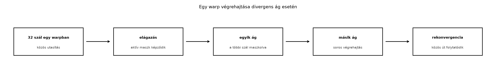

A GPGPU-programozás középpontjában az a felismerés áll, hogy a grafikus processzorok több ezer könnyűsúlyú végrehajtási egysége nem egymástól független, különálló magokként viselkedik, hanem szorosan összekapcsolt csoportokban hajtja végre az utasításokat. Ez a szerveződés határozza meg mindazt, amit később a memóriaelérés optimalizálásáról, az occupancy-ről vagy a kerneltervezésről tanulni fogunk. Ebben az alfejezetben a CUDA-végrehajtási modell legalapvetőbb rétegét, a SIMT (Single-Instruction, Multiple-Thread) elvet és annak hardveres megvalósulását, a warpot vizsgáljuk meg.

A hagyományos CPU-magok általában egy utasításfolyamot hajtanak végre, és a párhuzamosságot több, viszonylag független mag, illetve a magon belüli vektoros utasítások (SIMD – Single-Instruction, Multiple-Data) biztosítják. A GPU ettől eltérő gondolati modellt kínál: a programozó úgy ír kódot, mintha minden egyes adatelemhez külön szál tartozna, mindegyik szál saját utasításmutatóval és regiszterkészlettel rendelkezne, és egymástól függetlenül futnának. Ezt a látszólagos függetlenséget nevezzük SIMT-modellnek.
A valóságban azonban a hardver nem minden szálhoz rendel hozzá egy teljesen független vezérlőegységet. Ehelyett a szálakat rögzített méretű csoportokba, úgynevezett warpokba szervezi, és egy csoport minden tagja ugyanazt az utasítást hajtja végre ugyanabban az órajelciklusban. Ez a szervezés teszi lehetővé, hogy a hardver a vezérlési logikát (utasításlehívás, dekódolás, ütemezés) a csoport szintjén ossza meg, miközben az aritmetikai és memória-műveleteket a csoport tagjain párhuzamosan, adatpárhuzamos módon végzi el.
Fontos megkülönböztetnünk a SIMT-t a klasszikus SIMD-től. A CPU-s
SIMD-utasítások esetén a programozó explicit módon vektorregiszterekkel
dolgozik, például AVX-512 esetén __m512 típusokkal, és a
vektor szélessége a forráskódban is látható. Ezzel szemben a CUDA
kernelben a programozó skaláris kódot ír, mintha minden szálnak saját
skaláris regiszterei lennének:
// CUDA C++ (C++17, NVCC 12.4, A100, CC 8.0, Linux x86_64)
__global__ void add_kernel(const float* a, const float* b, float* c, int n) {
int i = blockIdx.x * blockDim.x + threadIdx.x;
if (i < n) {
c[i] = a[i] + b[i];
}
}A kernelben sehol nem jelenik meg vektortípus, mégis a hardver egyszerre 32 szálra (egy warp) hajtja végre ugyanazt az összeadást, amennyiben azok a szálak ugyanabba a vezérlési ágba tartoznak. A SIMT tehát egy programozói absztrakció, amely a szálak közötti függetlenség illúzióját adja, miközben a hardver a szálak csoportjait szinkron módon, lockstep üzemmódban futtatja.
A SIMT-modell előnye a programozó számára, hogy a párhuzamos kódot egyszerűbben lehet kifejezni, mint explicit vektorizálással. Nem kell kézzel szétbontani a ciklusokat a vektorregiszter szélességének megfelelő darabokra, és nem kell külön kezelni a vektorregiszterek feltöltését és kipakolását. Ugyanakkor a modellnek vannak következményei, amelyeket a divergencia tárgyalásakor részletezünk: ha a szálak nem ugyanazt az utasítást hajtják végre, a hardver kénytelen sorosítani az eltérő ágakat.
A CUDA hardveres végrehajtási alapegysége a warp. Minden
GPU-generációban a warp mérete 32 szál, és ez az érték a NVIDIA
dokumentációjában rögzített konstans. A szálak csoportosítása warpokba
determinisztikus: a szálakat a threadIdx.x értéke szerint
növekvő sorrendben osztják 32-es csoportokba. Ha például egy blokk 256
szálat tartalmaz, az első warp a 0–31 sorszámú szálakat, a második a
32–63 sorszámú szálakat foglalja magában, és így tovább.
A warp minden tagját lane-nek nevezzük. A lane sorszámát a
threadIdx.x % 32 kifejezés adja meg, és a hardver ezt a
sorszámot használja arra, hogy a warp szintű műveletekben, például a
shuffle-műveletekben meghatározza az adatcsere irányát. A lane sorszám a
kernel futása során nem változik, és a threadIdx.x / 32
egész osztás a warp sorszámát adja a blokkon belül.
A hardver szempontjából a warp egyetlen utasításfolyam, amely 32 adatelemre vonatkozik. A streaming multiprocesszor (SM) utasításütemezője minden órajelciklusban egy vagy több warp számára választ ki egy utasítást, és az SM végrehajtó egységei a warp 32 lane-jére párhuzamosan alkalmazzák azt. Ha az SM rendelkezik például 32 FP32 végrehajtó egységgel, akkor egy FP32 összeadás egyetlen órajelciklus alatt végrehajtható a teljes warp számára. Ha az SM csak 16 FP32 egységet tartalmaz, akkor a hardver két ütemben hajtja végre ugyanazt az utasítást, először az alsó 16, majd a felső 16 lane számára.
A warp fogalma tehát két szinten értelmezendő. Egyrészt programozói szempontból a warp a szálak olyan csoportja, amely egyszerre, ugyanazt az utasítást hajtja végre. Másrészt hardveres szempontból a warp az az utasításütemezési egység, amelyet az SM scheduler kezel. A két értelmezés közötti kapcsolat a lockstep végrehajtás: amíg a warp szálai ugyanazt az utasítást hajtják végre, a hardver teljes párhuzamossággal dolgozik.
Érdemes megjegyezni, hogy a CUDA programozási modell nem ígéri a warpok egymáshoz viszonyított sorrendjét. Két különböző warp futása tetszőleges sorrendben átlapolódhat, és a hardver az erőforrások kihasználása érdekében aktívan váltogatja a warpok végrehajtását. Amikor egy warp memória-műveletre vár (például globális memóriából olvas), az SM ütemezője egy másik, már futásra kész warp számára ad ki utasítást. Ez a warp-szintű átlapolás az egyik legfontosabb mechanizmus a memória-késleltetés elrejtésére, amelyet az Occupancy és erőforrás-korlátok alfejezetben részletesen vizsgálunk.
A SIMT-modell legfontosabb teljesítménybeli következménye az elágazások kezelésénél jelentkezik. Amikor a kernelben feltételes utasítás szerepel, például:
// CUDA C++ (C++17, NVCC 12.4, A100, CC 8.0, Linux x86_64)
__global__ void conditional_kernel(const float* input, float* output, int n) {
int i = blockIdx.x * blockDim.x + threadIdx.x;
if (i < n) {
if (input[i] > 0.0f) {
output[i] = sqrtf(input[i]);
} else {
output[i] = -sqrtf(-input[i]);
}
}
}a hardver szempontjából a kérdés az, hogy a warp 32 szálának feltételkiértékelése ugyanarra az eredményre vezet-e. Ha a feltétel a warp minden lane-jére ugyanazt az értéket adja, a végrehajtás egyszerű: a hardver a teljes warpot az egyik ágba irányítja, és minden lane ugyanazt az utasítást hajtja végre.
Ha azonban a feltétel a warp egyes lane-jeire igaz, másokra hamis, akkor a warpon belül branch divergence lép fel. A hardver ilyenkor nem tudja a két ágat párhuzamosan végrehajtani, mert a SIMT-modell szerint a warp egyszerre csak egy utasítást hajthat végre. A megoldás az, hogy a hardver az eltérő utasítási útvonalakat sorosítja: először az egyik ágba tartozó lane-ek aktívak, a többi lane inaktív, majd a másik ág következik a korábban inaktív lane-ekkel.
Az aktív lane-ek halmazát aktív maszknak (active mask) nevezzük. Ez egy 32 bites bitsorozat, amelyben az 1-es bit aktív lane-t jelöl. Amikor a hardver az egyik ágat hajtja végre, az aktív maszk csak azokat a lane-eket tartalmazza, amelyek ebbe az ágba tartoznak. A nem aktív lane-ek végrehajtó egységei ilyenkor üresjáratban vannak, de nem hajtanak végre utasítást, és a regisztereik értéke nem változik. Az inaktív lane-ek tehát nem okoznak hibás eredményt, csupán a hardver párhuzamos kapacitásának egy részét nem használják ki.
A divergens végrehajtásnak költsége van. Ha a warp fele az egyik ágba, fele a másikba tartozik, a hardvernek mindkét ágat végre kell hajtania, tehát a divergens szakasz végrehajtási ideje körülbelül a két ág végrehajtási idejének összege. Ez a teljesítménycsökkenés nem jelent hibás eredményt, de a kernel futásidejét jelentősen megnövelheti. A legrosszabb esetben a warp 32 lane-je 32 különböző útvonalon halad, így a hardver 32-szeres sorosítást szenved el.
A gyakorlatban a divergence akkor okoz jelentős problémát, ha a
feltétel a warp szálai között véletlenszerűen oszlik meg. Ha a feltétel
a warp szintjén koherens, vagyis a warp minden lane-je ugyanazt az ágat
választja, a divergence elkerülhető. A tipikus eset a
threadIdx.x-től függő feltétel, például amikor a feltétel a
lane páros vagy páratlan voltától függ. Ilyenkor minden warpban pontosan
16 páros és 16 páratlan lane van, tehát minden warp divergens lesz.
Ezzel szemben a blockIdx.x-től függő feltétel általában
warp-koherens, mivel a blockIdx értéke a blokk minden warpjára
ugyanaz.
A divergens végrehajtás nem tart örökké. Amikor a hardver minden eltérő ágat végrehajtott, a warp lane-jei újra találkoznak a közös végrehajtási ponton, és innen kezdve ismét lockstep üzemmódban, azaz egyetlen utasításfolyamként folytatják a futást. Ezt a folyamatot rekonvergenciának nevezzük.
A rekonvergencia pontja tipikusan az elágazást közvetlenül megelőző és az azt követő utasítások közötti programpont, ahol a feltételes ágak újra egyesülnek. A CUDA hardver a rekonvergenciát automatikusan kezeli: az SM a warp állapotát nyomon követi, és amikor a divergens szakasz véget ér, az aktív maszkot újra a teljes warpra állítja. A programozónak nincs szüksége explicit utasításra a rekonvergenciához, de tudnia kell, hogy a divergens szakasz után a warp ismét teljes párhuzamossággal fut.
Fontos azonban megérteni a rekonvergencia hatókörét. A hardver a
rekonvergenciát az utasításfolyam szintjén kezeli, nem a
programszemantika szintjén. Ha a kernelben egy if
elágazáson belül egy hosszú ciklus szerepel, és a ciklus feltétele
lane-enként eltérő iterációszámhoz vezet, a divergens szakasz jelentősen
elnyúlhat. A rekonvergencia ilyenkor is megtörténik, de csak akkor,
amikor az összes lane befejezte a saját ágát. A hardver nem tudja
“megszakítani” a lassabb lane-eket, tehát a warp végrehajtási ideje a
leglassabb lane által meghatározott lesz.
A rekonvergencia mechanizmusa a mai GPU-architektúrákban stack-alapú kezeléssel valósul meg. Amikor a warp divergens elágazáshoz ér, a hardver elmenti a rekonvergenciaponthoz tartozó aktív maszkot és a program counter értéket, majd az egyik ágat kezdi végrehajtani a megfelelő aktív maszkkal. Amikor ez az ág befejeződik, a hardver visszatér a mentett ponthoz, és a másik ágat hajtja végre a kiegészítő aktív maszkkal. Ez a folyamat tetszőleges mélységig ismétlődhet, ha a divergens ágak maguk is divergens elágazásokat tartalmaznak. A legrosszabb esetben a divergencia exponenciálisan növelheti a végrehajtandó útvonalak számát, de a gyakorlatban a mélyen beágyazott divergens elágazások ritkák, és a teljesítményprofilozók általában jól jelzik őket.
A branch divergence teljesítményre gyakorolt hatása közvetlenül mérhető. Tekintsünk egy olyan kernelt, amely a bemeneti tömb elemei alapján választ két különböző számítási ág között, és az ágak számításigénye eltérő:
// CUDA C++ (C++17, NVCC 12.4, A100, CC 8.0, Linux x86_64)
__global__ void branchy_kernel(const float* input, float* output, int n) {
int i = blockIdx.x * blockDim.x + threadIdx.x;
if (i < n) {
if (input[i] > 0.5f) {
// Nehezebb ág: 10 szorzás
float x = input[i];
for (int j = 0; j < 10; ++j) {
x = x * 1.0001f + 0.0001f;
}
output[i] = x;
} else {
// Könnyű ág: 1 szorzás
output[i] = input[i] * 2.0f;
}
}
}Ha a bemeneti adatokat úgy generáljuk, hogy a 0,5-ös küszöb a warp szálai között véletlenszerűen teljesül, a hardvernek minden warpban mindkét ágat végre kell hajtania, ezért a kernel futásideje a nehezebb ág által meghatározott lesz. Ha ezzel szemben a bemeneti adatokat úgy állítjuk elő, hogy a küszöb a warp szintjén koherens (például a blokk minden páros indexű eleme 0,1, minden páratlan indexű eleme 0,9, de a blokkmérete 256, és a feltétel a blokk indexétől függ), a divergence elkerülhető. A mérhető teljesítménykülönbség a két eset között jelentős lehet, és ezt a laborgyakorlatban részletesen bemutatjuk.
A programozó szempontjából a legfontosabb irányelv a warp-kohézió megőrzése. A feltételeket lehetőség szerint úgy kell megfogalmazni, hogy azok a warp szintjén egységesek legyenek. Ha például a kernel egy nagy adathalmazból csak bizonyos elemeket dolgoz fel, és a szűrési feltétel a warp lane-jei között véletlenszerűen teljesül, a divergens végrehajtás elkerülhető azzal, hogy a warpot először koherens blokkokra bontjuk, vagy a szűrést egy külön lépésben, kompaktáló művelettel végezzük el, amely után a feldolgozó kernel már tömör, koherens adatokon dolgozik.
A divergence hatása azonban nem mindig egyforma. Ha a divergens ágak mindkét oldalán rövid, hasonló számításigényű utasítások szerepelnek, a sorosítás költsége kicsi. Ha a feltétel ritkán teljesül, és a divergens ág csak ritkán aktív, a hardver a ritka ág végrehajtása előtt megvizsgálhatja, hogy van-e egyáltalán aktív lane, és ha nincs, az ágat átugorja. Ez a skip optimization a modern GPU-architektúrákban szabványos, és azt jelenti, hogy a teljesen inaktív ágak nem kerülnek végrehajtásra. A korai kilépés (early exit) optimalizálás azt is lehetővé teszi, hogy a hardver bizonyos feltételek mellett az elágazást a feltétel kiértékelése nélkül kezelje, ha az aktív maszk eleve üres.
A CUDA programozási modell számos olyan eszközt kínál, amelyekkel a
divergencia elkerülhető vagy hatása csökkenthető. Az egyik legfontosabb
eszköz a warp shuffle művelet, amely lehetővé teszi,
hogy a warp lane-jei közvetlenül adatot cseréljenek egymással anélkül,
hogy a shared memóriát kellene használni. A shuffle-műveletek használata
nem igényel explicit szinkronizációt, és a hardver közvetlenül a
regiszterek között mozgatja az adatokat. A leggyakrabban használt
shuffle-utasítás a __shfl_sync:
// CUDA C++ (C++17, NVCC 12.4, A100, CC 8.0, Linux x86_64)
__global__ void shuffle_example(const float* input, float* output, int n) {
int i = blockIdx.x * blockDim.x + threadIdx.x;
int lane = threadIdx.x % 32;
if (i < n) {
float val = input[i];
// A warp jobbra lépteti az adatokat: minden lane a lane-1 értékét kapja
float shifted = __shfl_down_sync(0xffffffff, val, 1);
output[i] = shifted;
}
}A 0xffffffff maszk a warp minden lane-jét aktívként
jelöli, és a __shfl_down_sync a megadott delta értékkel
lefelé lépteti az adatokat a warpon belül. A shuffle-műveletek a
divergence szempontjából is relevánsak, mert a maszk paraméter pontosan
megadja, hogy mely lane-ek vesznek részt a műveletben. Ha a maszk nem a
teljes warp, akkor a művelet csak a megadott aktív lane-ekre vonatkozik,
és a többi lane értéke változatlan marad.
A shuffle-műveletek mellett a warp vote és
warp match műveletek is hasznosak. A
__all_sync, __any_sync és
__ballot_sync függvények a warp aktív lane-jeinek
feltételét értékelik ki, és a __match_any_sync az azonos
értékű lane-eket azonosítja. Ezekkel a primitívekkel a kernel olyan
műveleteket végezhet el, mint a warp-szintű redukció vagy a warp-szintű
tömörítés, anélkül, hogy divergens útvonalakat kellene bejárnia.
A modern CUDA (a compute capability 7.0-tól kezdődően) a
__syncwarp utasítást is kínálja, amely a warp lane-jei
közötti szinkronizációt biztosít. Ez a blokk-szintű
__syncthreads warp-szintű megfelelője, és a warp-szintű
kódban akkor használható, ha a lane-ek közötti sorrend fontos, de a
teljes blokk szinkronizálása felesleges lenne.
A következő laborgyakorlat célja, hogy a SIMT-végrehajtás és a branch divergence elméleti ismereteit egy mérhető, reprodukálható kísérletben ellenőrizzük. A gyakorlat három kernelt hasonlít össze: egy divergenciamentes változatot, egy warp-kohéziót megtartó változatot és egy szándékosan divergens változatot. A mérési környezet adatait pontosan rögzítjük.
GPU-konfiguráció (helyőrző, izolált labor): - GPU: NVIDIA A100 (vagy a laborkörnyezetben elérhető, itt rögzítendő típus) - Compute capability: 8.0 - Driver: 550.54.15 (verzió ellenőrizendő a laborkörnyezetben) - CUDA: 12.4 - Operációs rendszer: Linux x86_64 (Ubuntu 22.04) - NVCC: 12.4, C++17 szabvány - Power limit: 300 W (a mérési naplóban rögzítendő) - ECC: ki - MIG: kikapcsolva - Háttérterhelés: nincs (izolált konténer)
Kernel a divergencia mérésére:
// divergence_lab.cu – CUDA C++ (C++17, NVCC 12.4, A100, CC 8.0, Linux x86_64)
#include <cuda_runtime.h>
#include <cstdio>
#include <cstdlib>
#include <chrono>
// Hibamakró az összes CUDA API-hívás ellenőrzésére
#define CUDA_CHECK(call) \
do { \
cudaError_t err = (call); \
if (err != cudaSuccess) { \
fprintf(stderr, "CUDA hiba: %s, fajl: %s, sor: %d\n", \
cudaGetErrorString(err), __FILE__, __LINE__); \
exit(EXIT_FAILURE); \
} \
} while (0)
// 1) Divergenciamentes kernel: a feltétel a warp szintjén egységes
__global__ void coherent_kernel(const float* input, float* output, int n) {
int i = blockIdx.x * blockDim.x + threadIdx.x;
if (i < n) {
// A feltétel a blockIdx.x-től függ, ami minden warpban azonos
bool heavy = (blockIdx.x % 2 == 0);
float x = input[i];
if (heavy) {
for (int j = 0; j < 10; ++j) x = x * 1.0001f + 0.0001f;
output[i] = x;
} else {
output[i] = x * 2.0f;
}
}
}
// 2) Warp-kohéziós kernel: a feltétel a threadIdx.x / 32-től függ
__global__ void warp_coherent_kernel(const float* input, float* output, int n) {
int i = blockIdx.x * blockDim.x + threadIdx.x;
if (i < n) {
bool heavy = ((threadIdx.x / 32) % 2 == 0);
float x = input[i];
if (heavy) {
for (int j = 0; j < 10; ++j) x = x * 1.0001f + 0.0001f;
output[i] = x;
} else {
output[i] = x * 2.0f;
}
}
}
// 3) Szándékosan divergens kernel: a feltétel a lane párosságától függ
__global__ void divergent_kernel(const float* input, float* output, int n) {
int i = blockIdx.x * blockDim.x + threadIdx.x;
if (i < n) {
bool heavy = ((threadIdx.x % 32) % 2 == 0);
float x = input[i];
if (heavy) {
for (int j = 0; j < 10; ++j) x = x * 1.0001f + 0.0001f;
output[i] = x;
} else {
output[i] = x * 2.0f;
}
}
}
// Mérési segédfüggvény: warm-up, 10 ismétlés, átlag és szórás
float measure_kernel(void (*kernel)(const float*, float*, int),
const float* d_input, float* d_output, int n,
dim3 grid, dim3 block) {
// Warm-up
for (int i = 0; i < 5; ++i) {
kernel<<<grid, block>>>(d_input, d_output, n);
CUDA_CHECK(cudaDeviceSynchronize());
}
const int reps = 10;
float times[reps];
cudaEvent_t start, stop;
CUDA_CHECK(cudaEventCreate(&start));
CUDA_CHECK(cudaEventCreate(&stop));
for (int i = 0; i < reps; ++i) {
CUDA_CHECK(cudaEventRecord(start));
kernel<<<grid, block>>>(d_input, d_output, n);
CUDA_CHECK(cudaEventRecord(stop));
CUDA_CHECK(cudaEventSynchronize(stop));
float ms = 0.0f;
CUDA_CHECK(cudaEventElapsedTime(&ms, start, stop));
times[i] = ms;
}
float sum = 0.0f;
for (int i = 0; i < reps; ++i) sum += times[i];
float mean = sum / reps;
float var = 0.0f;
for (int i = 0; i < reps; ++i) {
float d = times[i] - mean;
var += d * d;
}
float stddev = sqrtf(var / reps);
printf(" Átlag: %.4f ms, szórás: %.4f ms\n", mean, stddev);
CUDA_CHECK(cudaEventDestroy(start));
CUDA_CHECK(cudaEventDestroy(stop));
return mean;
}
int main() {
const int n = 1 << 24; // 16M elem
const int block_size = 256;
const int grid_size = (n + block_size - 1) / block_size;
// Host memória allokálása
float* h_input = new float[n];
float* h_output = new float[n];
// Bemeneti adatok inicializálása
for (int i = 0; i < n; ++i) {
h_input[i] = static_cast<float>(rand()) / RAND_MAX;
}
// Eszközmemória allokálása
float* d_input = nullptr;
float* d_output = nullptr;
CUDA_CHECK(cudaMalloc(&d_input, n * sizeof(float)));
CUDA_CHECK(cudaMalloc(&d_output, n * sizeof(float)));
CUDA_CHECK(cudaMemcpy(d_input, h_input, n * sizeof(float), cudaMemcpyHostToDevice));
// Grid és block konfiguráció
dim3 block(block_size);
dim3 grid(grid_size);
printf("Divergencia mérés, n=%d, block=%d, grid=%d\n", n, block_size, grid_size);
printf("1) Divergenciamentes (blockIdx-alapú) kernel:\n");
measure_kernel(coherent_kernel, d_input, d_output, n, grid, block);
printf("2) Warp-kohéziós (threadIdx/32 alapú) kernel:\n");
measure_kernel(warp_coherent_kernel, d_input, d_output, n, grid, block);
printf("3) Divergens (lane-párosság alapú) kernel:\n");
measure_kernel(divergent_kernel, d_input, d_output, n, grid, block);
// Ellenőrzés: a kimenetek azonosak-e?
CUDA_CHECK(cudaMemcpy(h_output, d_output, n * sizeof(float), cudaMemcpyDeviceToHost));
// (Itt további validáció lehet: a három kernel kimenetének összehasonlítása)
CUDA_CHECK(cudaFree(d_input));
CUDA_CHECK(cudaFree(d_output));
delete[] h_input;
delete[] h_output;
// Az eszköz hibáinak ellenőrzése
CUDA_CHECK(cudaGetLastError());
CUDA_CHECK(cudaDeviceReset());
return 0;
}Fordítási parancs:
nvcc -std=c++17 -O3 -arch=sm_80 divergence_lab.cu -o divergence_labFuttatási parancs:
./divergence_labVárt eredmény (elemzés, nem mért adat): A
divergenciamentes kernelben a heavy feltétel a
blockIdx.x-től függ, amely minden warpban azonos. Ezért a
hardver a teljes warpot vagy a nehezebb, vagy a könnyebb ágba irányítja,
és nincs divergence. A futásidő a blokkok fele a nehezebb, fele a
könnyebb ágat hajtja végre.
A warp-kohéziós kernelben a heavy feltétel a
threadIdx.x / 32-től függ, amely szintén minden lane-re
azonos a warpon belül. A divergence tehát ebben a kernelben sem lép
fel.
A divergens kernelben a heavy feltétel a lane
párosságától függ: minden warpban pontosan 16 páros és 16 páratlan lane
van. A hardvernek minden warpban mindkét ágat végre kell hajtania, ezért
a teljes futásidő várhatóan jelentősen megnő a másik két kernelhez
képest. A várható arány a nehezebb ág súlyától függ; a példában a
nehezebb ág 10 szorzást tartalmaz, a könnyebb ág 1-et, így a divergens
kernel futásideje közelítőleg a 10 szorzásos ág teljes költségét fizeti
meg minden warpban, míg a koherens kernelek a blokkok fele számára csak
a könnyű ágat hajtják végre.
Mérési napló (elkülönítve a várt eredményektől): A tényleges mérési eredményeket a laborkörnyezetben kell rögzíteni, az alábbi táblázat szerint:
| Kernel | Átlag (ms) | Szórás (ms) | Megjegyzés |
|---|---|---|---|
| coherent | (mért) | (mért) | |
| warp_coherent | (mért) | (mért) | |
| divergent | (mért) | (mért) |
A mérési naplóban rögzíteni kell a pontos GPU-típust, a drivert, a CUDA-verziót, az órajelet és a power limitet. A mérést legalább 10 ismétléssel, warm-up után kell elvégezni, és az átlag mellett a szórást is közölni kell. A mérési eredményeket a várt elemzéstől elkülönítve kell dokumentálni, és a nem futtatott körülményeket jelölni kell.
A SIMT-modell megértésének hiánya számos tipikus programozói hibához
vezet. Az egyik leggyakoribb hiba az, amikor a fejlesztő azt
feltételezi, hogy a szálak a kernelben megadott sorrendben hajtódnak
végre. A CUDA végrehajtási modell nem garantálja sem a blokkok, sem a
warpok sorrendjét, és a __syncthreads csak a blokkon belüli
szinkronizációt biztosítja. A szálak közötti függőségeket ezért explicit
szinkronizációs primitívekkel kell kezelni.
Egy másik gyakori tévedés a warp méretének feltételezése. Bár a
jelenlegi NVIDIA GPU-kban a warp mérete 32, a programozónak nem szabad
erre a konstansra építenie a kód logikáját olyan módon, amely a jövőbeni
architektúrákon megtörik. A CUDA biztosítja a warpSize
eszközkonstanst, de a legjobb gyakorlat az, hogy a kernel logikáját a
warp méretétől függetlenül fogalmazzuk meg, kivéve, ha a teljesítmény
szempontjából elengedhetetlen a warp-szintű optimalizálás.
A harmadik tipikus hiba a divergencia alábecsülése. A fejlesztők
gyakran azt gondolják, hogy egy if elágazás elhanyagolható
költséggel bír, különösen akkor, ha a feltétel csak kis részben
teljesül. Azonban ha a feltétel a warp szintjén véletlenszerűen oszlik
meg, minden warp kénytelen mindkét ágat végrehajtani, függetlenül attól,
hogy hány lane tartozik az egyes ágakba. A megoldás a feltétel
warp-kohézióra törekvő megfogalmazása, vagy a divergens részek
elválasztása a fő számítási útvonaltól.
Végül gyakori hiba a shuffle- és vote-műveletek maszkjának helytelen
megadása. A __shfl_sync, __all_sync és hasonló
függvények minden hívásánál meg kell adni az aktív lane-ek maszkját, és
a maszknak pontosan meg kell egyeznie a hívásban részt vevő szálak
halmazával. Ha a maszk a warp minden lane-jét tartalmazza, a
0xffffffff értéket kell használni. Ha a maszk nem
tartalmazza az összes lane-t, a nem szereplő lane-ek viselkedése
definiálatlan, és a program hibás eredményt adhat.
A SIMT-modell a CUDA programozási modell alapköve. A hardver a szálakat warpokba szervezi, és egy warp minden lane-je ugyanazt az utasítást hajtja végre lockstep üzemmódban. Amikor a szálak feltétele eltérő ágakba vezet, branch divergence lép fel, amely a hardver párhuzamos kapacitásának kihasználatlanságához vezet. A rekonvergencia automatikus, de a divergens szakasz hossza a leglassabb ág által meghatározott. A programozó a warp-kohézió megőrzésével és a warp-szintű primitívek használatával jelentősen csökkentheti a divergence költségét. A következő alfejezetben a streaming multiprocesszor felépítését és a végrehajtási egységek szerveződését vizsgáljuk meg, amelyekre ez a warp-szintű modell épül.